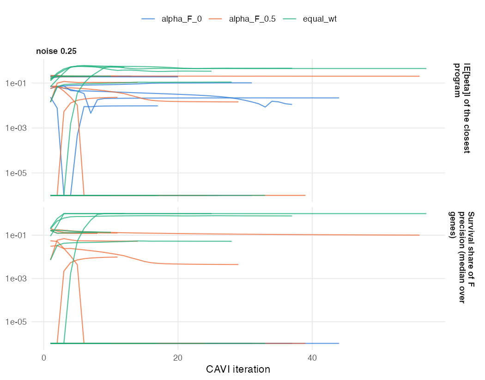
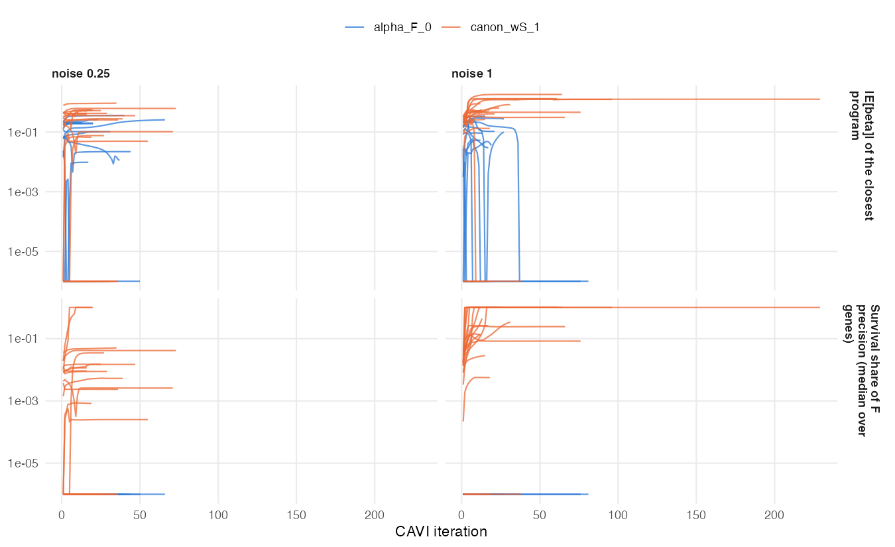

11 Methods development record: survival supervision (October 2026)
This chapter is a chronological methods-development record: why the survival-supervised loading updates changed, what each experiment tested, and which attempts failed. It supports the mathematical/software audit; it is not the concise advisor-meeting update or a validated final method. Read the October16 meeting summary for progress since October2. Sections below describe their own checkpoints; later failures supersede early statements of universal convergence. The approved benchmark still uses \(\alpha_F=0\), and no supervised replacement is adopted.
Executive summary
- Test bed. A planted prognostic program that explains 0.27% (noise multiplier 0.25) or 0.02% (noise 1) of expression variance, alongside two non-prognostic programs that carry the variance. Fit at K = 7; 20 seeds per noise level.
- Survival barely entered the loadings before. At α_F = 0 it does not enter at all. With α_F = 0.5 its median share of a loading’s precision is under 1%, and α_F = 0.5 reproduces the April scale runaway in simulation (‖F_k‖ up to 169 times its starting value).
- Two errors found and fixed:
- the survival term of the single-modality F update left the other genes of the same program in the residual, so each gene re-explained the whole program and the update overshot;
- with a signed loading prior, the SVD start discarded signs and every program collapsed.
- Initial C2 test-bed result: all fits in that bounded early panel converge, and the coefficients stay bounded. Later sections document nonconvergence in other evaluations.
- Recovery is still low: 1/20 seeds at noise 0.25 and 6/20 at noise 1, against the 80% threshold. This is the starting point for supervised initialization and the β prior (C3–C4).
11.1 Test bed
Data come from the multimodal simulation’s low-variance prognostic scenario, expression block only (n = 120 training and 120 validation patients, p = 50 genes, 3 true programs). Program 3 has score scale 0.15 and log hazard ratio 1.10; programs 1 and 2 carry the variance and are not prognostic. Each cohort is z-standardized. A fit recovers the planted program when some estimated program has absolute loading correlation ≥ 0.7 with it and a coefficient of the correct sign. A program is survival-active when its posterior mean coefficient is at least 1.96 posterior SDs from zero.
The fits use a point-Laplace prior on L and F. The recommended point-exponential prior collapses to zero programs on this centered data in 6 of 10 seeds: centered scores are signed, and a nonnegative score prior cannot represent them.
11.2 Diagnostics of the earlier F update (C1)
| Arm | Recovered (of 10) | Median |cor| with planted | Null survival-active / fit | Converged | Validation C |
|---|---|---|---|---|---|
| α_F = 0 | 0 | 0.17 | 0.4 | 10 | 0.534 |
| α_F = 0.5 | 0 | 0.11 | 0.4 | 10 | 0.533 |
| equal weights (α_F = 0.5, precisions doubled) | 1 | 0.23 | 0.6 | 10 | 0.558 |

The diagnostics answer the four questions from the plan:
- Is the planted direction pulled at all? Barely. The closest program is a variance program whose coefficient is near 0, so survival information is gated out.
- Survival’s share now. Median 0.7% of the loading precision at α_F = 0.5 and 14% with equal weights, both for programs that already carry a nonzero coefficient.
- Does the April runaway reproduce? Yes, at α_F = 0.5: ‖F_k‖ reaches 169 times its starting value.
- Objective versus update. The monitored objective weights survival p/(1−α)·α = 50 times more than genomics, while the F update weights them equally. The monitored value decreases 32–82 times per arm across 10 fits, so it is not the objective the updates climb. The large survival weight also inflates the denominator of the relative-change test, so fits can stop early.
11.3 Scale canonicalization and the corrected update (C2)
Each program is rescaled to unit SD of its training score after every iteration; β̃_k is then a log hazard ratio per SD. α_F is dropped: every survival term carries one weight w_S, and w_S = 1 is the plain posterior. The F update now removes the other genes of the program from each gene’s survival term and runs as a sequential sweep over genes, the same update the multimodal model uses. The derivation and the correction are in derivations/cox_on_YF/canonical_ZF/.
| Arm | Noise | Recovered (of 20) | Null survival-active / fit | Converged | Validation C |
|---|---|---|---|---|---|
| α_F = 0 (earlier) | 0.25 | 0 | 0.45 | 20 | 0.553 |
| canonical, w_S = 1 | 0.25 | 1 | 0.60 | 20 | 0.557 |
| α_F = 0 (earlier) | 1 | 0 | 0.15 | 20 | 0.521 |
| canonical, w_S = 1 | 1 | 6 | 0.65 | 20 | 0.641 |

With canonicalization the coefficients stay below 2 in absolute value, and every fit converges. Survival’s share of the loading precision rises to between 10% and 100% for the closest program at noise 1, and the planted program is found in 6 of 20 seeds there. At noise 0.25, the variance programs dominate the factorization and the planted program is found once.
The null survival-active rate rises by 0.15 and 0.50 per fit over α_F = 0. The second is at the limit of the +0.5 margin.
11.4 Supervised initialization and the β prior (C3 + C4)
Every arm uses the canonical configuration with w_S = 1. Program K starts from the null-model Cox score direction \(Y^\top u_0\), where \(u_0\) are the martingale residuals of the null model. The shared β prior is held at its starting value for 10 iterations, then refit from the K coefficients after each sweep.
| Arm | Recovered, noise 0.25 | Recovered, noise 1 | Null survival-active / fit | Converged |
|---|---|---|---|---|
| α_F = 0 | 0/20 | 0/20 | 0.45; 0.15 | 20; 20 |
| canonical (C2) | 1/20 | 6/20 | 0.60; 0.65 | 20; 20 |
| + supervised start | 1/20 | 7/20 | 0.60; 0.60 | 20; 20 |
| + shared normal prior, warm-up | 1/20 | 6/20 | 0.75; 0.60 | 20; 20 |
| + point-Laplace prior | 1/20 | 5/20 | 0.35; 0.35 | 20; 20 |
| + point-normal, slab SD 1 | 1/20 | 5/20 | 0.50; 0.40 | 10; 13 |
| fixed N(0, 2²) (reference) | 1/20 | 5/20 | 0.85; 0.70 | 20; 20 |
No arm comes close to the 16/20 threshold. The supervised start correlates only 0.38 (noise 0.25) and 0.56 (noise 1) with the planted loadings, and the program it seeds collapses in almost every seed.
How much can survival alone recover here? A Cox model fit directly on the 50 genes (ridge or lasso, cross-validated) recovers the planted direction in 0/20 or 4/20 seeds at noise 0.25, and in 4/20 or 13/20 at noise 1. The true predictor’s validation C is 0.68 at noise 0.25. With 120 patients and about 84 events, the survival data do not determine the direction well enough for 80% recovery at the lower noise level, by this or any other method. Whether to keep this test bed, calibrate it, or set the threshold relative to the survival-only reference is open; C5 waits on that decision.
11.5 Calibrated test bed
The test bed was recalibrated so that the survival data identify the planted direction. The rule was fixed in advance: the smallest training size, then the smallest planted coefficient, at which a survival-only Cox lasso recovers the planted program in at least 18 of 20 seeds at both noise levels. Only n = 400 with planted log hazard ratio 3.3 qualifies (lasso 18/20 and 20/20). The planted program still explains under 0.5% of expression variance. The recovery threshold stays at 80%.
| Arm | Recovered (0.25; 1) | Null survival-active / fit | Converged | Validation C |
|---|---|---|---|---|
| α_F = 0 | 1; 1 | 1.15; 0.35 | 20; 20 | 0.641; 0.540 |
| canonical, w_S = 1 (C2) | 18; 20 | 1.35; 0.35 | 20; 19 | 0.771; 0.761 |
| + supervised start | 20; 20 | 1.00; 0.30 | 20; 19 | 0.770; 0.761 |
| + shared normal β prior, warm-up | 20; 20 | 1.60; 0.65 | 20; 20 | 0.769; 0.761 |
| + shared point-Laplace β prior, warm-up | 17; 19 | 1.10; 0.25 | 20; 20 | 0.763; 0.765 |
| + point-normal, slab SD 1 | 17; 19 | 1.20; 0.30 | 20; 18 | 0.763; 0.766 |
| fixed N(0, 2²) (reference) | 20; 20 | 1.70; 0.70 | 20; 20 | 0.771; 0.760 |
Without survival in the loadings, the planted program is missed (1/20), and validation C falls to 0.64 and 0.54. Every survival-supervised arm recovers it in most seeds and reaches validation C of about 0.76–0.77.
The chosen configuration is the supervised start with a shared point-Laplace prior on β, which meets every simulation criterion: - recovery 85% and 95%; - fewer null survival-active programs than α_F = 0; - every fit converges; - the most stable updates of all arms.
The normal-prior warm-up arm also passes, with higher recovery but more false positives. The real-data check (lower 95% limit of ΔC against α_F = 0 above −0.02) comes next.
11.6 Real data: external validation of the supervised model
The selected configuration was refitted on the reported training data (TCGA + CPTAC, K = 7) and scored on the five external cohorts. It is compared with the reported α_F = 0 model.
| Cohort | Supervised − reported (95% CI) |
|---|---|
| Dijk | −0.050 (−0.113, 0.012) |
| Moffitt | −0.001 (−0.071, 0.065) |
| PACA-AU array | +0.010 (−0.054, 0.069) |
| PACA-AU seq | +0.029 (−0.038, 0.097) |
| Puleo | −0.002 (−0.033, 0.027) |
| Mean of cohorts | −0.003 (−0.029, 0.024) |
Mean external C is 0.624 for the supervised model and 0.627 for the reported one. The pre-specified criterion, a lower 95% limit above −0.02, fails by 0.009. The point estimate is zero, and with five cohorts the interval is about ±0.027 wide, so the criterion requires a gain of about +0.007 to pass. The supervised model keeps three survival-active programs where the unsupervised fit keeps one.
11.7 Multimodal model with survival supervision
The supervised start and the shared point-Laplace prior on β were carried into the multimodal model (expression + methylation), which already had the exact loading update, the scale canonicalization and ELBO-based pruning. Calibrated two-modality bed, starting rank 7, true rank 3:
| Arm | Recovered (0.25; 1) | Null survival-active / fit | Converged | Programs kept | Validation C |
|---|---|---|---|---|---|
| framework of 10/1 | 17; 16 | 0.75; 0.65 | 40/40 | 3 | 0.826; 0.892 |
| + survival supervision | 18; 20 | 0.55; 0.15 | 40/40 | 3 | 0.844; 0.943 |
With supervision, the multimodal model recovers the planted program in 90% and 100% of datasets, keeps exactly the three true programs (two that explain the variance and one that explains survival), and has fewer false prognostic programs.
11.8 Open: single-modality convergence and the choice of number of programs
- After an error in the monitored objective was fixed, the selected single-modality configuration converges in 19 of 20 fits at each noise level. The two exceptions oscillate stably (relative size 10⁻⁴) and still recover the planted program.
- Pruning by the ELBO, which works in the multimodal model, removes the planted program in single modality, where survival gains too little to offset the program’s cost.
The rule for the number of programs is the next decision.
11.9 Protected pruning and starting rank
The protected-pruning adoption assessment could not be completed as specified: the multimodal fitter’s convergence flag refers to reconstruction/predictor changes, whereas the fixed rule requires ELBO convergence for every fit. The panel was stopped before a complete rank batch; there is no completed result table. Protected pruning was not adopted for either model, and the conditional real-data 1-SE run was not performed. Starting K remains 7 with the handoff configurations. The exact protection inequality also protects a zero coefficient with zero variance; that boundary was implemented literally, without tuning. See DECISIONS.md.
The opt-in implementation and fixed runners are retained on m5/k-selection for review. The default-fit comparisons against feature/supervised-F preserve the full fitted objects and pruning sequences.
11.10 Comparators on the calibrated planted bed
The fixed 20-seed comparison completed at noise 0.25. Recovery is 17/20 for the selected supervised model and 0/20 for EBMF alone, EBMF–Cox, EBMF–lasso-Cox and PCA–Cox. Mean validation C is 0.763, 0.634 and 0.688 for supervised, EBMF–Cox and PCA–Cox, respectively. One supervised fit did not converge; lasso has one undefined C, so its full mean is unavailable.
At noise 1, eight datasets have only one EBMF factor (unsupported by glmnet) and two have none. The prompt stopped without altering the design. The ten complete datasets are a selected subset and do not support a full-seed comparison. Raw rows, failure messages, actual denominators and defined-score counts are in results/benchmark_sim/outputs/supervision_comparators/. No DeSurv arm was available.
11.11 The constant two-step multimodal C-index
The greedy ceilings 6, 7 and 8 all yield the same six-factor EBMF fit: loadings, coefficients and training risks are identical. Thus all-donor C = 0.418 and primary-PDAC C = 0.424 repeat exactly. The requested ceiling is passed correctly; the baseline is allowed to stop below it. The reporting scripts now expose the actual retained rank. The audit table is in results/multimodal_real/outputs/supervised/two_step_rank_audit.csv; no core fitter changed.
The selected M4 multimodal configuration reached the 500-iteration cap without convergence on TCGA. It retained seven programs but all β posteriors collapsed to zero, giving exactly constant ICGC risks and an undefined C under the existing helper. This real-data failure is retained without tuning the prior, warm-up, rank or stopping rule.
| Model | Primary ICGC C | All-donor C | Programs | Survival-active | Converged |
|---|---|---|---|---|---|
| Selected multimodal | NA, constant | NA, constant | 7 | 0 | No |
| 10/1 pruned framework | 0.701 | 0.665 | 7 | 1 | No |
| Stacked EBMF–Cox | 0.424 | 0.418 | 6 | 0 (Wald z) | Unrecorded; iteration warning |
| Selected expression-only | 0.588 | 0.616 | 7 | 1 | Yes |
Primary PDAC includes 50 donors; all-donor scoring includes 67 and is secondary. Both joint fits hit 500 iterations. No prior, rank or stopping rule was tuned. All 50 shared donors receive identical risks in the primary/all analyses for every arm. The expression platform is standardized once before selecting primary donors; the review correction preceded expression scoring. The fixed frozen-C helper returns NA for constant risks, where ordinary Harrell ties would give 0.5; both indicate no discrimination.
The full suite passes 549 tests. Results, warning and donor-consistency records are in results/multimodal_real/outputs/supervised/.
11.12 Robustness and comparator follow-up
The five-prompt evidence, independent branch commits and limitations are gathered in the consolidated report. Protected pruning was not adopted: multimodal ELBO convergence could not be assessed under the allowed edits. DeSurv was unavailable. The high-noise comparator table uses only ten of twenty datasets and cannot establish a full comparison. The TCGA→ICGC selected multimodal fit reached its cap with all β moments zero; its constant predictions provide no discrimination.
In 40 calibrated datasets, all 880 robustness fits completed. Recovery for the default, best-of-20 jittered, and Normal-loading arms was respectively 17,17,15 at noise .25 and 19,17,17 at noise 1 (each out of 20). ELBO selection lost two high-noise recoveries and gained none. All selected starts converged, but 28 of 800 individual jittered fits and two default fits reached the cap.
The unchanged training CV rerun compares point-Laplace versus Normal β: mean C .651199 versus .653153, paired difference −.001954 (SE .003055). Each has one capped fold instead of five. The point-Laplace β choice remains unchanged.
| Top features per cohort | Intersecting genes | Mean fold C | SE | Mean active / fold | Capped folds / 5 | Full-training active | Full fit converged |
|---|---|---|---|---|---|---|---|
| 1000 | 662 | 0.650200 | 0.017200 | 1.2 | 1 | 3 | Yes |
| 2000 | 1365 | 0.648933 | 0.022598 | 2.4 | 0 | 3 | Yes |
| 3000 | 2064 | 0.651199 | 0.023631 | 2.2 | 1 | 2 | Yes |
| 5000 | 3600 | 0.655413 | 0.027386 | 2.0 | 2 | 3 | Yes |
The observed means differ by at most .0065, with SEs .017–.027. These results do not justify changing the selected 3,000-per-cohort setting. All four full-training fits converged.
Feature screening and scaling precede folds, as in the original protocol, so absolute training CV may be optimistic. No external cohort was scored in the robustness analysis. The branch’s full suite passes 550 tests.
The robustness process wrote all final tables, then exited 1 with a trailing parse error after a diagnostic-only source edit during execution. Saved fit counts and summary arithmetic were independently checked; the current runner parses and passes 550 tests. No rerun or tuning was attempted. This execution anomaly is documented in the report and outputs/supervised_robustness/execution_status.md.
11.13 DeSurv comparison prerequisite
The head-to-head comparison stopped before fitting because no installed or vendored DeSurv implementation was available. The authors provide a companion-package repository, but it was not installed or reimplemented under this handoff. No C-index or bootstrap table is claimed. See results/benchmark_sim/outputs/desurv_h2h/BLOCKED.md for searched locations and requirements to resume. The protected-pruning assessment did not authorize a configuration change; K remains 7.
11.14 Protected-pruning reassessment (2026-10-16)
Andrew clarified that protection requires positive posterior SD and that each model is judged by its own convergence rule. The dead-program boundary is fixed and tested without changing default fits. The complete rank panel is registered before execution in docs/plans/Round2_attempts_log.md; no empirical result or new configuration is claimed yet. The benchmark snapshot is unchanged.
11.15 Single-modality pruning loses a protected direction during refitting
A pre-registered observation of the first prescribed simulation seed uses the unchanged selected protected model. It records every nullcheck state/gain without editing the fitter or consuming random numbers.
| Noise | Initial K = 7 loading correlation | After first refit (K = 6) | Terminal correlation | Terminal K | All stages converged |
|---|---|---|---|---|---|
| .25 | .895844 | .390941 | .477163 | 2 | Yes |
| 1 | .958283 | .715245 | .734053 | 1 | Yes |
At noise .25 the planted program is strongly prognostic and protected; a different program is deleted. Recovery is then lost during the refit. The shared beta prior stays nondegenerate in both cases. Thus a point-mass prior does not explain these two traces. They diagnose a transition and do not estimate its frequency.
The old refit reinitializes uncertainty, beta, precision and loading priors from L/F means. Andrew approved an opt-in full-posterior refit experiment using the same full 160-cell protected single panel and unchanged adoption rule. No remedy is adopted from these two cases. The earlier alpha_F=0 benchmark remains valid; K = 7/no-pruning is the approved fallback for subsequent feature sensitivity while supervised K selection continues. See attempts4–5 in the Round2 attempt history.
11.16 Completed protected-pruning panel: recovery, rank and convergence
The process exited 0 after 93.23 minutes with 800 unique cells, zero errors and zero warnings. Every original reference/selected/protected row is retained in results/benchmark_sim/outputs/k_selection/round2/attempt3/ (results.csv, summary.csv, adoption.csv, individual checkpoints). No external cohort was loaded. Final fit flags and intermediate pruning caps are separate below.
single protected arm:
| K_init | Noise | Recovered/20 | False/fit | Reference+.5 | Final converged/20 | MedianK | Intermediate caps |
|---|---|---|---|---|---|---|---|
| 5 | 0.25 | 2 | 1.10 | 1.75 | 20 | 2 | 1 |
| 5 | 1 | 2 | 0.25 | 0.90 | 20 | 1 | 0 |
| 7 | 0.25 | 2 | 1.10 | 1.65 | 20 | 2 | 1 |
| 7 | 1 | 2 | 0.25 | 0.85 | 20 | 1 | 1 |
| 10 | 0.25 | 2 | 1.10 | 1.80 | 20 | 2 | 0 |
| 10 | 1 | 2 | 0.30 | 0.90 | 20 | 1 | 1 |
| 15 | 0.25 | 2 | 1.10 | 1.80 | 20 | 2 | 0 |
| 15 | 1 | 2 | 0.25 | 0.90 | 20 | 1 | 0 |
multimodal protected arm:
| K_init | Noise | Recovered/20 | False/fit | Reference+.5 | Final converged/20 | MedianK | Intermediate caps |
|---|---|---|---|---|---|---|---|
| 5 | 0.25 | 19 | 0.50 | 1.75 | 20 | 3 | 0 |
| 5 | 1 | 20 | 0.15 | 1.05 | 20 | 2 | 0 |
| 7 | 0.25 | 18 | 0.55 | 1.25 | 20 | 3 | 0 |
| 7 | 1 | 20 | 0.15 | 1.15 | 20 | 3 | 0 |
| 10 | 0.25 | 17 | 0.70 | 1.10 | 20 | 3 | 1 |
| 10 | 1 | 19 | 0.30 | 0.95 | 20 | 3 | 0 |
| 15 | 0.25 | 18 | 0.60 | 1.25 | 20 | 3 | 0 |
| 15 | 1 | 20 | 0.50 | 1.25 | 19 | 3 | 0 |
Single fails recovery/rank in all groups. The objective is already variance- corrected; the approved full-state remedy investigates the refit loss without altering criteria. Multimodal passes every recovery and false-positive group, but fails rank at K = 5, noise = 1 and convergence at K = 15, noise = 1. The latter is seed 20261033 (finalK = 5,500 iterations,loading correlation .934102,output flagFALSE). Protected MM also has one capped intermediate stage (K = 10/noise .25). The selected unprotected MM arm has one final cap and one intermediate cap; the 10/1 reference has no final cap and one intermediate cap. Single protected has four capped intermediate stages despite every returned final fit converging. These are reported limitations; no model meets every success criterion.
No new starting K, protection default or benchmark replacement is adopted. The conditional 1-SE analysis is not eligible from Task1-3. Continue Andrew’s approved Single full-state remedy and subsequently the prescribed Task2 training-only collapse diagnosis. MM’s current failures are rank/convergence, not a failed recovery criterion; do not tune1.96, rank 3 or the output tolerance.
11.17 Full posterior pruning-refit assessment
11.17.1 Task1-5 completed: full-state refits improve recovery but are not adopted
All 160 new fits completed with zero execution errors or warnings. The comparison retains all 160 original reference and 160 mean-only protected rows. Full-state recovery is 15–19/20 instead of 2/20, and every false-positive margin passes. However, K_init=5/noise=.25 misses the recovery threshold (15/20); five final fits hit the 300-iteration ELBO cap; high-noise median K is 1 at every starting K. The candidate therefore fails recovery, convergence and rank. No 1-SE run is eligible, no configuration is adopted, and the benchmark/defaults stay unchanged.
| K_init | Noise | Recovery /20 | False active | Reference + .5 | Final ELBO converged /20 | Median K | Intermediate caps |
|---|---|---|---|---|---|---|---|
| 5 | 0.25 | 15 | 1.15 | 1.75 | 19 | 3 | 2 |
| 5 | 1 | 18 | 0.20 | 0.90 | 20 | 1 | 0 |
| 7 | 0.25 | 17 | 1.10 | 1.65 | 19 | 3 | 4 |
| 7 | 1 | 19 | 0.15 | 0.85 | 19 | 1 | 5 |
| 10 | 0.25 | 17 | 1.15 | 1.80 | 19 | 3 | 6 |
| 10 | 1 | 19 | 0.20 | 0.90 | 19 | 1 | 8 |
| 15 | 0.25 | 16 | 1.10 | 1.80 | 20 | 3 | 0 |
| 15 | 1 | 19 | 0.30 | 0.90 | 20 | 1 | 0 |
The five final caps are seed20261026 at noise .25 with K_init5/7/10 (final K3), and seed20261017 at noise1 with K_init7/10 (final K2). Intermediate caps total25, reported separately from returned-fit flags. Outputs: results/benchmark_sim/outputs/k_selection/round2/attempt5_posterior/; adoption.csv records adopted=FALSE. Original reference table MD5: d45c207936855fe274ad14209474bf34.
This completes Andrew’s additional full-state experiment. The listed Single ladder has no remaining applicable remedy: its survival objective is already variance-corrected, and the failure is not convergence alone. Further changes require a new decision; the approved K7/no-pruning fallback remains available for Task5. Continue Task2’s separate multimodal diagnosis and prescribed ladder. No external data were scored or used for this assessment.
11.18 Task2-1 completed TCGA diagnosis (2026-10-15)
Commit ccebdf8 preceded all ten fits; its full suite passed584/0. The process completed with exit0, ten status checkpoints, no errors or warnings. Single fits took100–102 seconds; multimodal fits took2384–2556 seconds each. All returned K7, with no pruning refits. Fits and trace CSVs are in results/multimodal_real/outputs/round2/diagnosis1/; real-data RDS files are ignored. All new training results are shown beside frozen benchmark rows:
| Source/model | Arm | K | Active | Risk SD | Training C | Converged/iterations |
|---|---|---|---|---|---|---|
| round2/single | selected | 7 | 1 | 0.350339 | 0.654791 | TRUE/297 |
| round2/single | fixed | 7 | 0 | 0.309121 | 0.638645 | TRUE/297 |
| round2/single | normal | 7 | 3 | 0.396799 | 0.661636 | TRUE/298 |
| round2/single | framework | 7 | 3 | 0.456210 | 0.651632 | FALSE/300 |
| round2/single | no_start | 7 | 1 | 0.346748 | 0.654967 | FALSE/300 |
| round2/multimodal | selected | 7 | 0 | 0.000000 | NA | FALSE/500 |
| round2/multimodal | fixed | 7 | 0 | 0.059893 | 0.635837 | FALSE/500 |
| round2/multimodal | normal | 7 | 0 | 0.000000 | 0.629695 | FALSE/500 |
| round2/multimodal | framework | 7 | 1 | 0.255337 | 0.646367 | FALSE/500 |
| round2/multimodal | no_start | 7 | 0 | 0.000000 | NA | FALSE/500 |
| benchmark_snapshot/multimodal_framework | pruned | 7 | 1 | NA | 0.637768 | FALSE/NA |
| benchmark_snapshot/single_alpha_F0 | pruned_expression_only | NA | NA | NA | 0.593717 | NA/NA |
| benchmark_snapshot/expression_only_framework | pruned_expression_only | 7 | 1 | NA | 0.643559 | FALSE/NA |
The absorbing-prior hypothesis holds in both affected arms. In selected multimodal, slab probability reaches exactly0 at outer99/inner1; all beta means and SDs become exactly0 at outer99/inner2 and stay0 thereafter. Without the supervised start, these events occur at outer54/inner3 and54/inner4. The prior at extinction retains a nominal Laplace scale1, with zero slab weight; this is not a numerical scale-zero diagnosis. Fixed Laplace never loses its .5 slab weight, but has zero credible programs. Shared Normal avoids exact point-mass absorption but ends with risk SD1.61e-7 and zero credible programs. Historical per-factor Normal retains one credible program. None of Single’s shared-prior contrasts has a zero slab probability. No configuration is adopted.
Every multimodal arm hits the unchanged500-iteration output cap. Final raw expression/methylation reconstruction changes are respectively: selected .000446/.008929; fixed .001263/.015696; Normal .000456/.007998; framework .001139/.006451; no-start .001139/.006375. Both exceed1e-4 in all arms. Including intercepts or centering predictions does not remove molecular movement (see cap_diagnosis.csv). Selected and no-start eta changes are0; fixed/framework eta changes are .000424/.001163, Normal2.23e-10. Every arm’s last100 ELBO differences is positive: no observed ELBO oscillation supports choosing damping at this point. This does not prove every coordinate is monotone. No stopping criterion, iteration cap, prior default or benchmark changed.
The newly fitted framework training C .646367 differs from the frozen framework’s .637768. It is a current-code diagnostic refit, not a tagged-code reproduction; no equality or superiority claim follows. This difference and the framework’s output cap remain explicit. No external score selects a remedy.
Next causally applicable rung: constrain the refitted shared Laplace slab probability below at1/K (R2); R1 fixed-prior diagnostic already fails the necessary full-training credible-program and convergence requirements, but its required simulation/CV evaluation has not yet been performed. Those unrun parts must not be described as completed. Continue the prescribed ladder with a committed design and unchanged simulation/CV criteria.
11.19 DeSurv comparison deferred for review
Andrew deferred the real-data head-to-head. Pinned author software is installed in an isolated ignored library, and the adapter/driver/Longleaf wrappers have nine focused software tests. No real-data DeSurv fit or external prediction has run; there are no new scientific results. The Round2 handoff records the software pins, exact author preprocessing/projection, and review concerns. Andrew also approved omitting DeSurv from the signed-Gaussian simulation panel.
11.20 Task4 completed five-comparator panel (2026-10-15)
Pre-run commits dd11923 and d353322; full suite599/0 before each. The first sandbox launch failed before any dataset because a PSOCK socket could not open; its design and execution_status.md remain in round2/. The unchanged host-socket retry completed with exit0:40 datasets,200 method rows, zero fitting errors. Outputs: results/benchmark_sim/outputs/supervision_comparators/round2_retry1/. DeSurv was omitted by Andrew’s explicit decision; no arm or threshold changed.
| Method | Noise | Recovered/n | Validation C (finite n) | Null active/fit | Median K | ELBO-converged |
|---|---|---|---|---|---|---|
| ebmf_alone | 0.25 | 0/20 | NA (0) | NA | 2 | not reported |
| ebmf_cox | 0.25 | 0/20 | 0.634182 (20) | 1.15 | 2 | not reported |
| ebmf_lasso_cox | 0.25 | 0/20 | 0.638527 (19) | NA | 2 | not reported |
| pca_cox | 0.25 | 0/20 | 0.687753 (20) | 4.25 | 7 | not reported |
| supervised | 0.25 | 17/20 | 0.763449 (20) | 1.1 | 7 | 19/20 |
| ebmf_alone | 1 | 0/20 | NA (0) | NA | 1.5 | not reported |
| ebmf_cox | 1 | 0/20 | 0.538504 (18) | 0.45 | 1.5 | not reported |
| ebmf_lasso_cox | 1 | 0/20 | 0.553546 (6) | NA | 1.5 | not reported |
| pca_cox | 1 | 0/20 | 0.596066 (20) | 3.3 | 7 | not reported |
| supervised | 1 | 19/20 | 0.765290 (19) | 0.25 | 7 | 19/20 |
EBMF rank counts: low noise0 zero-factor,0 one-factor,20 at least2; high noise2 zero-factor,8 one-factor,10 at least2. No EBMF fitting error. Every method/noise denominator is20, including constant-risk and inapplicable cases. At high noise lasso is applicable to10 datasets and has finite C in6; its undefined scores are retained. EBMF-alone has no fitted survival risk, so its C is undefined by design. The summaries label every finite-C count. Lasso’s nonzero count is not Bayesian credibility; false-active isNA.
The supervised fit caps at300 iterations for seed20261026/noise .25 and seed20261017/noise1; both recover the planted program. At seed20261018/noise1 it has no active program and undefined constant-risk C, counted as not recovered. Consequently this panel does not establish universal convergence or satisfy all project criteria. It is a comparator report, not adoption. There are30 warning-bearing lasso rows: installed glmnet warns that a future release will change the Cox tie default from Breslow to Efron. The exact warning is retained per row; no package/default was changed to silence it.
This completes the bounded Task4 rerun, including rank/denominator reporting. Task2’s remedy ladder remains open and is the priority. No real-data or external-cohort selection occurred in this simulation task.
11.20.1 Multimodal framework instability in a training fold
The historical framework’s completed fold1 returns zero beta posterior means and second moments; C remains undefined. Folds2/3 retain a prognostic program. The saved-state per-factor EB update estimates variance max(0,x²−1/A), with all seven pseudo-z magnitudes below1 in fold1. Beta KL is0 from outer167 onward. Unlike the shared point-mass prior, these variances are re-estimated each coordinate and can revive; an unchanged-fold trace will establish the trajectory. Andrew explicitly requests this diagnosis rather than assigning C=.5. The reference instability is not resolved, and no configuration is adopted. The preregistered trace must reproduce the original posterior and history exactly; only observation changes.
The diagnostic takes the original event-stratified fold and raw imputed training matrices, enables the existing trace, and records beta moments and pseudo-observations after each inner sweep. Its summary distinguishes a temporary all-zero sweep from persistent loss through the last sweep. It uses no external cohort, changes no prior or convergence rule, and reports the frozen benchmark rows alongside the repeated fold’s metrics.
11.20.2 Saved framework loading-pattern comparison (descriptive, no new fit)
All comparisons use existing fits and the same frozen feature order. For benchmark program4 (the frozen fit’s sole credible program), the largest absolute loading correlations by block are:
| Saved fit | Expression r | Methylation r | Combined r | Credible programs | Training C | Fold-validation C |
|---|---|---|---|---|---|---|
| Frozen benchmark full TCGA | 1 | 1 | 1 | 1 | .637768 | NA |
| Current full-TCGA framework diagnosis | .915133 | .898948 | .895973 | 1 | .646367 | NA |
| Current framework CV fold1 | .787112 | .685382 | .752163 | 0 | NA | NA |
Each strongest match above is program4. Relative to the current full-TCGA program4, fold1’s correlations are .938139 (expression), .846790 (methylation), .933739 (combined), yet its beta is exactly0. Thus the loading pattern remains recognizable; this is not removal of the program by pruning (fold1 has K7 and no pruning refit). This comparison is a description of saved fits, not a cross-validation estimate using a full-training loading matrix, an external selection criterion, or proof of benchmark reproducibility. No fit, score convention or model is changed.
11.20.3 Task2-2 final fixed-prior evaluation: not adopted
The100-fit local evaluation exited0:80 simulations and20 TCGA CV fits, with0 fitting errors and0 nonempty warning records. All100 design keys, the unchanged training-cache MD5 and the local fold-manifest SHA256 were verified. Output: results/benchmark_sim/outputs/round2/fixed_prior/.
| Model | Noise | Recovered | Null active / reference | Converged |
|---|---|---|---|---|
| Single | .25 | 17/20 | 1.00 / 1.15 | 19/20 |
| Single | 1 | 19/20 | .35 / .35 | 20/20 |
| Multimodal | .25 | 19/20 | .35 / .75 | 20/20 |
| Multimodal | 1 | 20/20 | 0 / .65 | 20/20 |
Recovery and false-positive margins pass throughout. Single’s low-noise seed20261026 hits300 iterations, so universal simulation convergence fails. These are unchanged K7 beds; K selection has not been adopted.
| Source/model | Fixed-prior CV mean C | Framework CV mean C | Delta / paired SE | Converged candidate/reference | Frozen training C |
|---|---|---|---|---|---|
| Round2 Single (5 pairs) | .608225 | .623985 | -.015761 / .006968 | 5/5, 5/5 | NA |
| Round2 multimodal (5 specified pairs) | NA | NA | NA / NA | 0/5, 0/5 | NA |
| Frozen multimodal benchmark, full TCGA | NA | NA | NA | NA | .637768 |
| Frozen alpha_F0 expression-only benchmark, full TCGA | NA | NA | NA | NA | .593717 |
| Frozen expression-only framework, full TCGA | NA | NA | NA | NA | .643559 |
Single fails the one-paired-SE CV rule. Multimodal’s reference fold1 has C=NA/risk SD0; no finite five-pair difference exists, so the rule cannot pass. The candidate’s own five C values are all finite, mean .599978, but none of its five fits has a credible program, and all cap at500. All five reference fits also cap at500; reference credible-program counts by fold are0,1,1,0,0. Its finite fold C values2–5 are .541502,.586047, .485437,.359223. No conditional four-fold mean is substituted.
The frozen training rows above are labelled non-CV references, not comparisons against a refitted benchmark. Earlier full-TCGA fixed-prior diagnosis likewise has0 credible programs and a500 cap. Thus R1 fails necessary real-data criteria despite the multimodal simulation passes. No fixed prior, K, default or benchmark change is adopted. No external cohort is scored. The unchanged-fold trace continues, and Andrew approves the separate prospective profiled-curvature experiment after exact trace reproduction; its implementation is still private and no scientific profiled-curvature fit has run.
11.20.4 Task2-3 result: exact reproduction; loss at outer167/inner1
The unchanged-fold trace exited0 in2142.164 seconds, with no warnings. All13 checks in identity.csv are TRUE: every saved posterior/prior field and the complete500-iteration history equal original R1 cell84 exactly. No numerical fit changed when observation was enabled.
Of2500 inner sweeps, the first all-zero posterior occurs at sweep831, outer167/inner1. The maximum absolute pseudo-z falls from1.368511, 1.262920 and1.128647 in outer166/inner3–5 to .966195 at the next sweep. Programs3 and4 are the last two nondegenerate coefficients. All1670 sweeps from831 through2500 have zero means/SDs; there is no later revival. Earlier revival is real: programs1/3/4/5/6 revive7/8/2/1/2 times, respectively. The existing full-TCGA framework trace never loses all coefficients, and its program4 is nondegenerate throughout2500 sweeps. This supports the per-coordinate variance-boundary diagnosis, not shared point-mass absorption, a scoring defect or removal by pruning.
The repeated fold retains K7, has no credible program, risk SD0/C=NA, and reaches the unchanged500 cap. Its comparison_with_benchmark.csv retains all frozen benchmark training rows. The frozen multimodal benchmark training C remains .637768 (one credible program); this is not a CV row.
Outputs: results/multimodal_real/outputs/round2/framework_fold_trace/: identity.csv, fold1_trace.csv, fold1_boundaries.csv, full_training_boundaries.csv, comparison_with_benchmark.csv, training_source.txt and warnings.txt. The fit RDS remains ignored.
Andrew’s explicit approval of the separate profiled-curvature test was conditional on this reproduction, and that prerequisite now passes. No remedy has been fitted at this checkpoint. Source edits still wait for the fresh full suite/result commit. The prospective test uses the existing framework priors/initialization and changes only the working-intercept profile flag; it will not combine the unresolved shared-prior scale question.
11.20.5 What the profiled-curvature implementation changes (scientific results pending)
The helper code/profile_cox_intercept.R takes a numeric patient vector or patient-by-feature matrix and frozen nonnegative Cox weights. It subtracts the weighted mean, preserving dimensions/names; zero total curvature returns the original input. Base R colSums and sweep implement this without a patient-by-patient covariance matrix or a new package dependency.
Both fitters use this centered design only for survival projection means, loading uncertainty, beta updates and the survival contribution to F updates. Genomic residuals remain on the original observations. This is equivalent to the dense profiled quadratic Hc=diag(w)-ww’/sum(w), including cross-subject covariance induced by uncertain loadings. The existing compiled scalar sweep is reused. Canonicalization and raw prediction retain their original inputs.
The option is FALSE by default and disabled objects match the protected base-branch definitions. Supported experimental priors are per-factor Normal; shared priors fail explicitly rather than combining the unresolved prior-scale question. Single additionally requires canonical fitting, no cohort/strata effects and no pruning. Its original ELBO monitor/rule remains unchanged; the multimodal output rule also stays fixed. Convergence can still fail.
The evaluation runner records80 new simulation fits,10 new candidate CV fits, two full-TCGA fits and10 unchanged cached framework CV references. It checks input/fold hashes, per-fit keys and provenance, preserves undefined C, and reports each arm’s own mean only with all5 finite folds. Error/warning records are kept independently. Dense precision/linear-term and covariance-objective checks test the actual model path; separate checks verify raw genomic residuals, base-branch identity and full-training routing. No scientific profiled fit or external score has run at this checkpoint.
11.21 Task2-4 completed: profiled Cox curvature is not adopted (2026-10-15)
The preregistered panel finished with exit0:102 records,92 new fits and10 unchanged cached framework CV references, zero execution errors and zero warning-bearing records. All original controls, criteria, fixed simulation beds, TCGA cache and folds were retained. Output directory: results/benchmark_sim/outputs/round2/profiled/.
| Model | Noise | Recovered /20 | False active | Reference false active | Converged /20 |
|---|---|---|---|---|---|
| Single | .25 | 18 | 1.35 | 1.15 | 19 |
| Single | 1 | 20 | .40 | .35 | 20 |
| Multimodal | .25 | 16 | .80 | .75 | 20 |
| Multimodal | 1 | 19 | .40 | .65 | 20 |
Every recovery and false-positive criterion passes. Single seed20261026 at noise .25 reaches300 iterations; its oscillation is documented above. All40 multimodal simulations converge. These are the approved recovery/false-positive criteria, not proof that protected K selection is resolved.
| Source/model | Mean candidate CV C | Reference CV C | Paired delta | Paired SE | CV converged | Frozen training C |
|---|---|---|---|---|---|---|
| Round2 Single, profiled | .624776 | .623985 | .000791 | .000791 | 5/5 | — |
| Round2 multimodal, profiled | .563678 | NA | NA | NA | 0/5 | — |
| Frozen multimodal framework | — | — | — | — | — | .637768 |
| Frozen single alpha_F=0, matching TCGA comparison | — | — | — | — | — | .593717 |
| Frozen expression-only framework | — | — | — | — | — | .643559 |
Single passes its five-pair one-SE comparison. Multimodal has five finite candidate scores, but only four finite original-reference scores: the predeclared paired comparison remains undefined and fails eligibility. The candidate’s own mean uses all five folds; no undefined reference is replaced or dropped. All five profiled multimodal folds now have nonconstant risk, including formerly collapsed fold1; their credible-program counts are 0,1,0,0,0. Every multimodal candidate CV fit reaches500 iterations, as did all five cached reference fits. All five Single candidate and reference CV fits converge. Frozen training C values are labelled historical training quantities, not CV estimates or external scores.
| Source/model | Training C | Credible programs | Nonconstant risk | Converged | Iterations | K_final |
|---|---|---|---|---|---|---|
| Round2 Single, profiled | .651632 | 3 | yes | no | 300 | 7 |
| Round2 multimodal, profiled | .639172 | 1 | yes | no | 500 | 7 |
| Frozen multimodal framework | .637768 | 1 | — | no | — | 7 |
| Frozen single alpha_F=0, matching TCGA comparison | .593717 | — | — | — | — | — |
| Frozen expression-only framework | .643559 | 1 | — | no | — | 7 |
Both full-training candidates pass the defined no-collapse check and fail convergence. No full-training factor is deleted. Eight of92 new fits cap: one Single simulation, the full Single fit, five multimodal CV fits and the full multimodal fit; another five caps belong to the unchanged cached multimodal references. No intermediate pruning cap is reported. Detailed per-fit C, activity counts, risk SD, rank, caps and warnings are in results.csv, training_cv_with_benchmark.csv and training_full_with_benchmark.csv; the latter two retain frozen rows.
Decision: do not adopt. Profiling removes exact constant-risk collapse in this candidate’s five training-CV folds, but does not deliver stable, credibly prognostic programs throughout CV or universal convergence. The original paired-reference issue remains open. No external cohort is scored, no criterion/default is changed, and the benchmark remains the current best state. Further Task2 work is paused by Andrew, not resolved or ladder-exhausted. The prior/posterior KL and common-beta-prior scale questions remain separate review items, not established explanations for these results.
Final checkpoint verification: full R suite 631 passed,0 failed (including six new prior-consistency fixtures); prepared observer syntax parses. The observer itself has not been run and requires prospective registration and commit before execution. All ten benchmark SHA256 checks pass after the panel; tag object0fea14903a75606e495267f2f35712eac10d9fc6 still peels to a352f17ca9cff523caa80756aa2af085e62551e1. The writeup.qmd/html/pdf files have no diff against that tag. Patient-level folds.csv and RDS/data are ignored and excluded from the commit. No push, protected-branch edit or merge has occurred.
11.22 Advisor-request audit and revised priorities after resumption
Andrew requests a direct accounting of progress against the10/2 meeting, including the original fixed-K sliding feature-count study up to the available universe, probe-wise methylation variability, survival supervision and multimodal biological/predictive value. The audited evidence and proposed implementation sequence are in ../../plans/Advisor_Priorities_and_Execution_10_15_26.md.
The earlier Single supervised external result does not pass non-inferiority; the limited gene-count experiment and screened10k skewness plots do not finish the requested full-range feature-count/SD study. The proposal separates benchmark sensitivity from unadopted method remedies. It requires approval of the Task5 sequencing change before implementation; no new scientific fit has run. Documentation-checkpoint full suite631 passed,0 failed.
11.23 Advisor-facing progress account and joint-program roles
The five-page report ../../reports/Advisor_Progress_since_10_2_26.pdf records the evidence since10/2 and the approved revised execution order. It explicitly retains the earlier Single external non-inferiority failure, limited feature coverage and real-data convergence failures. The seven frozen joint-program roles are tabulated: six expression-bearing programs, including the credible basal-like/classical axis, and a methylation-only program; immune structure has substantial methylation loading. These are provisional biological labels. Neither the methylation-only nor immune component is credibly prognostic. K7 itself is not a failure; the roles, stability and redundancy need evaluation. No model or external score ran. Rendered PDF visually checked; full suite631 passed,0 failed.
11.24 Task5-QC1 result: full-probe methylation variability completed
Preregistered in dc69f6d; serial run completed with exit0, no errors and zero warning records. All305492 available TCGA probes are described on the unchanged 144 training patients. Frozen screened probe IDs and training patient order match the cache. No imputation, survival fit, filter/default adoption or external scoring occurred. Outputs: results/multimodal_real/outputs/feature_sensitivity/cpg_qc/.
| Descriptive group | Probes | Overlap with frozen screened10k |
|---|---|---|
| All available TCGA | 305492 | 10000 |
| Mean beta in[.1,.9] | 182996 | 9990 |
| Neither observed extreme fraction>=.95 | 221222 | 10000 |
| Both filters | 182996 | 9990 |
| Mean-only | 0 | 0 |
| Proportion-only | 38226 | 10 |
| Frozen/current screened reference | 10000 | 10000 |
Every probe has defined sample SD; no probe is constant. There are29414 missing raw entries, retained as missing in observed-value summaries. Of these,2130 occur in the screened reference; the unchanged cached imputation contains none. Median beta SD is .060008 across all probes, .179288 in raw screened probes and .179186 in the imputed screened cache. Median arcsine SD is .153757/.417231/.416941, respectively. Median probe mean beta is .461005/.350031/.350125. These are data descriptions, not survival results. The current10k screen is strongly enriched for variability; that does not establish the best feature universe. The mean filter would discard10 of the currently selected probes and is not adopted. Upstream cross-reactive/SNP filtering remains unverified; this is an explicit provenance gap.
The requested SD histograms and mean-versus-SD binned plot were visually checked. No SD threshold was selected. An independent check on21 probes (including the most-missing probe) agrees with base-R mean/SD to maxima 4.44e-16/4.16e-17, and transformed SD to5.55e-17. Cached values at observed raw entries agree exactly. Input hashes remain unchanged; zero warnings. The full probe inventory RDS remains local/ignored; only aggregate tables, plots and non-identifying hashes/provenance are committed.
The advisor progress PDF is updated to six pages with these results and the SD figure; changed pages were visually checked. The original write-up is unchanged. Fresh post-run full suite 642 passed,0 failed. No new performance, biological or supervision claim is made. Next: the fixed-K7 expression feature-count study and its training-only factor-agreement curve.
11.25 Fixed-K expression curve: preflight complete, initialization decision pending
The common training universe contains17900 genes on273 patients. Reusing the existing rankings reaches2064,5001,10000 and17900 shared genes. The frozen baseline gene order and standardized subset values agree exactly. Its activity matrix has rank4 of7, making the prescribed warm-start inverse singular. A cold-primary design is proposed before any feature fit. The matched expression-only framework also retains K7, so pooled Single four classified versus joint seven does not isolate the methylation contribution. Independent feature-manifest/agreement helpers pass nine focused checks and the full suite651/651. No new feature-performance result is claimed.
11.26 Full-range expression sensitivity and first CpG expansion results
The approved cold-primary fixed-K7/alpha_F0 expression study completes24/24 converged fits, zero warnings/errors, through17900 common genes. Counts and conditional training-CV means are2064:.6084,5001:.5773,10000:.6088 and17900:.6068. Frozen D4 has historical mean external C=.626699; no external cohort was rescored for this feature study. Retained classifications are4/4/4/3, without deletion. All-gene risk correlation to the fresh baseline is.505; dense nonzero loading means do not validate gene-level selection. More inputs may reduce arbitrary screening, but no predictive gain, noninferiority result or new default is established. Full tables/curves are in results/benchmark_sim/outputs/feature_expansion/cold_primary/.
The eligible305352-CpG training universe reproduces frozen10k values, ranking and patients exactly, using unchanged whole-universe imputation. Supplied mean/extreme-proportion masks retain182934/221142 probes; neither is adopted. The unfiltered methylation-only curve starts with the following full144-patient training results. Molecular inputs differ, so these are contextual training comparisons, not matched CV or incremental-modality estimates.
| Source | Genes | CpGs | Training C | Credible programs | Convergence |
|---|---|---|---|---|---|
| Frozen joint benchmark | 3000 | 10000 | .637768 | 1 | 500 cap |
| Frozen expression-only benchmark | 3000 | 0 | .643559 | 1 | 500 cap |
| New methylation-only reference | 0 | 10000 | .612671 | 0 | 500 cap |
| New methylation-only expansion | 0 | 25000 | NA | NA | Moment-validity error |
The10k fit took963.827s with nonconstant riskSD.117264, no warnings/errors; the25k fit stopped after27.981s at the F-update Cox/projection-moment guard. Neither constitutes a successful supervised methylation model. Preserve NA for the failed fit. Larger counts/CV remain unrun. Andrew approved a bounded unchanged-settings diagnostic to identify the invalid field, not a remedy.
The saved joint-role audit matches all seven benchmark/newer profiled activities (.832–.999) and gives risk correlation.954; both fits cap500. Program4 is the sole credible coefficient in each. Program7 is methylation- only in both, with within-block norm shares58.9%/68.7% and loading correlation.993. This supports distinct molecular roles without establishing optimal K, convergence or added prediction. Norm shares are not additive PVE or survival fractions; newer biological labels are not inferred. The advisor progress report contains the full benchmark-linked tables in HTML/PDF; the original write-up and immutable snapshot are unchanged.
11.27 CpG numeric failure reproduced; manuscript sensitivity update requested
Task5-M2 repeats the unchanged25k cell after prospective commit df455e0 and reproduces its exact error after32.218s, zero warnings. First invalid inputs occur at outer6/inner1/program1:17 nonfinite Cox working weights/numerators; projection moments are finite and variances positive. Predictor span5734 causes143/144 globally shifted exponentials to underflow to zero and17 risk-set sums to become zero (6 event rows). Source/data fingerprints match. This locates the numerical failure but does not resolve rapidly expanding predictors or convergence. No remedy/guard/default is changed.
Andrew accepts documenting problems at larger CpG counts and requests the factor-loading correlations and updates to the progress report and larger write-up where applicable. Only the10k full fit exists, so CpG correlations across counts cannot be estimated yet; the failed25k row stays undefined. The shared-gene loading correlations from the completed expression curve are reported. The bounded manuscript revision adds those verified results, benchmark-linked tables and the CpG diagnosis without claiming a supervised replacement or changing the preserved benchmark tag/snapshot. Full suite 672 passed,0 failed. Additional numeric remedies are separate prospective work, not inferred from this reporting authorization.
11.28 Loading-update balance and numerical-repair design
The saved-state loading audit completes without refitting. Non-point-mass program median survival precision shares are6.30e-11–3.03e-7, and median absolute-numerator shares8.70e-7–1.82e-4. Frozen joint credible program4 has expression/methylation shares2.03e-7/9.00e-10 for precision,7.27e-5/4.40e-6 for numerator. These are isolated-coordinate likelihood contributions at capped terminal states, excluding priors; they do not identify trajectory causes or select a survival weight. Saved objective components are separate.
Andrew asks to resolve the25k failure rather than treat it as an intrinsic CpG-count limit. A same-likelihood log-space Cox calculation is prepared, opt-in with default/base identity tests. Task5-M3 prospectively registers captured-point numerical verification followed by one unchanged25k case. No preprocessing, prior, K, convergence cap, rule or survival weight changes. Fresh full suite684 passed,0 failed; no scientific M3 run before its commit.
11.29 Stable-arithmetic CpG checkpoint and requested pause
The SAME process99846 exits0 at its unchanged500 cap. Stable arithmetic passes the identified numerical failure but scientific convergence FAILS. No warnings/errors; runtime2660.496s (44.3min). Full-training25k C=.983853984, logPL=-40176.962256, riskSD39086.312543, credible7/retained7. Final relative eta/reconstruction changes=.005891900/.06215805 versus tol1e-4. Predictor range at the start of outer500 is312267.6–520103.6; logPL worsens in178/499 outer transitions. LogPL alone need not be monotone in joint fitting; this observation does not establish a cause. High training C with these extreme, unconverged estimates is NOT a predictive gain or meaningful discovery. Saved terminal history is an aggregate export, not another experiment.
Benchmark context (same144 TCGA training patients; different molecular inputs):
| Source | Genes | CpGs | Training C | Credible | Convergence |
|---|---|---|---|---|---|
| Frozen joint | 3000 | 10000 | .637768 | 1 | No,500 cap |
| Frozen expression-only | 3000 | 0 | .643559 | 1 | No,500 cap |
| Original methylation-only | 0 | 10000 | .612671 | 0 | No,500 cap |
| Original methylation-only | 0 | 25000 | NA | NA | Original numeric error |
| Stable-arithmetic same case | 0 | 25000 | .983854 | 7 | No,500 cap |
A1 executes only after authoritative M3 termination, exits0 and verifies unchanged inputs. Same144 patients/common10000 probes; all7 activity pairs match identical indices. Both fits are capped;25k arithmetic differs.
| Program | Activity r | Common-CpG loading r |
|---|---|---|
| 1 | .982335 | .945217 |
| 2 | .877731 | .921874 |
| 3 | .968273 | .925401 |
| 4 | .512932 | .118295 |
| 5 | .764353 | .038005 |
| 6 | .234632 | -.086562 |
| 7 | .940994 | .922771 |
Risk r=.244887983. Accurate comparison succeeds; no minimum correlation was specified and no stability/adoption criterion is invented. Complete matrices, matching margins and convergence/arithmetic labels preserve weak matches. This is provisional saved-fit agreement, not a clean converged count curve. No new fitting, CV, external scoring, biology transfer or feature selection. Outputs: results/multimodal_real/outputs/feature_sensitivity/logspace_case/ (case.csv,results_with_benchmark.csv,input_hashes.csv,progress.csv, terminal_history.csv; patient-level fit.rds ignored) and cpg_count_agreement/ (program_pairs.csv, full matrices, risk_agreement.csv, input hashes, interpretation.txt and companion benchmark-context table).
The benchmark remains unchanged; no model adopted. Andrew requests pausing for regrouping after this report/commit. No further fitting before review.